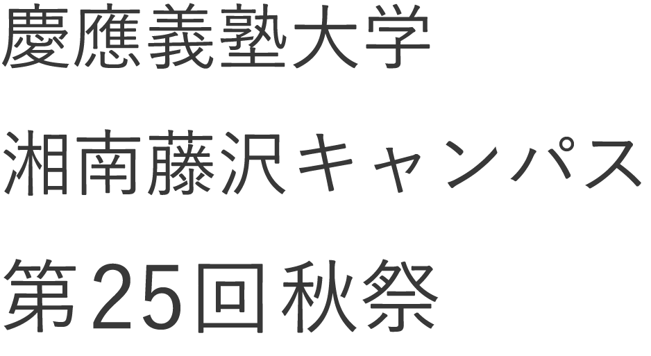
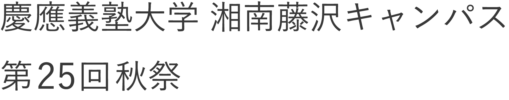
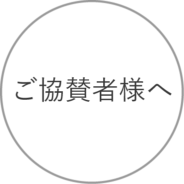
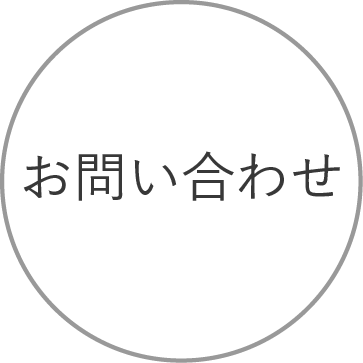
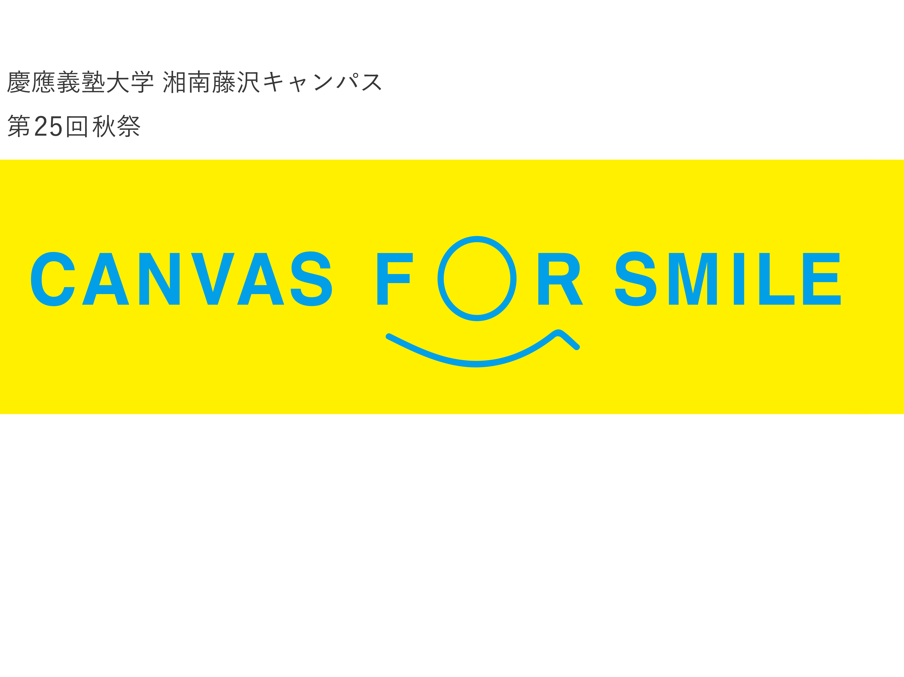

TOP

ご理解、ご賛同を頂いている皆様のご協力を賜りまして昨年度も盛大に第24回秋祭を執り行うことが出来ました。
この場を借りまして厚く御礼申し上げます。 本年度の第25回秋祭、並びに秋祭実行委員会をどうぞよろしくお願い致します。



ご理解、ご賛同を頂いている皆様のご協力を賜りまして昨年度も盛大に第24回秋祭を執り行うことが出来ました。
この場を借りまして厚く御礼申し上げます。 本年度の第25回秋祭、並びに秋祭実行委員会をどうぞよろしくお願い致します。
秋祭とは？
第25回秋祭実行委員会 代表 松室より挨拶
今年度ロゴについて
など秋祭をみなさまにより楽しんでいただけるよう順次拡充を図って参ります。
最新情報
こちらより秋祭実行委員会からの最新情報をご確認いただけます。
TwitterやFacebook等SNSも更新させていただいております。
@akisai_sfcさんのツイート
慶應義塾大学 SFC 秋祭
ご協賛者様へ
ご協賛者様に向けて、
第25回秋祭実行委員会 渉外局長による挨拶文を掲載しております。
アクセス
東京・新宿など大きな駅からの経路、
また大学最寄りの小田急線・横浜市営地下鉄ブルーライン 湘南台駅および東海道線 辻堂駅からのご案内も掲載しております。
〒252-0082
神奈川県藤沢市遠藤 5322
慶應義塾大学 湘南藤沢キャンパス
お問い合わせ
当ウェブサイトより実行委員に直接のお問い合わせが可能です。
お気軽にご相談ください。
秋祭の様子
現在準備中です。
昨年度秋祭の当日写真や実行委員準備風景など更新予定です。
新歓日程

 東京・新宿など大きな駅からの経路、
東京・新宿など大きな駅からの経路、